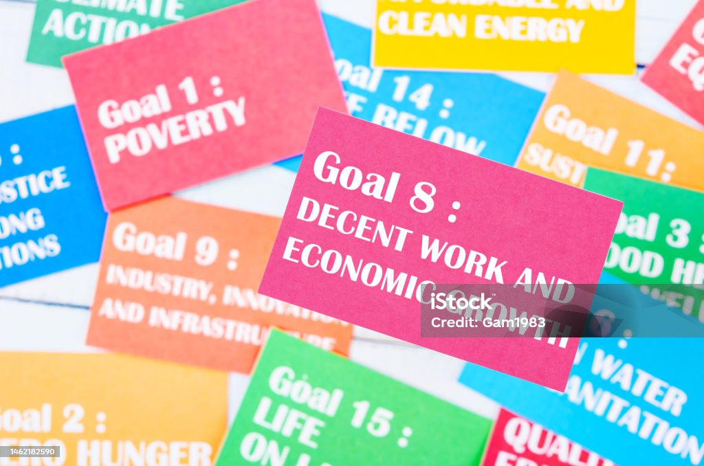

Summary
- The united nations set up the 17 sustainable development goals in 1945 as world war 2 was ending.
- 193 member states make up the united nations today.
- The main goal of the united nations is to maintain international peace, protect human rights, give aid to countrys in need and maintain international law.
- Many of these goals are not going to be reached within the given timeline of 15 years including no poverty.
- More than half the global population recieve soical protection benefit.

Who are the United Nations
The united nations most commonly referred too as the UN were founded in 1945 as world was 2 ended. Currently there is 193 memebers. Some memebrs include India, Ireland and Switzerland. They work to maintain inertantionl seurity and peace, ptotect human rights, give aid to those in need and maintain international law.
Why the UN adopted the 17 sustianable devlopment goals
The 17 sustainability goals were adopted by the United Nations (UN) in 2015. These goals were developed as the previous Millennium Developmet Goals expired the end of 2015. While wanting to tackle poverty they soon realised that they had to include things such as gender inequality in these 17 goals. These goals are also trying to tackle climate change.
What are the 17 goals?
1. No poverty 2. Zero hunger 3. Good health and Well-being 4. Quaity education 5. Gender equailty 6. Clean warer and sanitation 7. Affordable and clean energy 8. Decent work and econmic growth 9. Industry, innovation and infrastructure 10. Reduced inequalities 11. Sustaianble cities and communities 12. Responsible consumption and production 13. Climate action 14. Life below water 15. Life on land 16. Pease, justice and strong institutions 17. Partnerships for the goals
When they hope to have the sustaianable development goals implemented by.
In 2015 when these goals were adopted they stated it was a 15 year plan. This would bring us to 2030. Although these goals have helped millions of people with the current pace of these devlopemtns its not likely they will achieve all of these goals with just five years left. Based on the new report published by the United Nations in 2025, Along with many other goals No poverty is not likely to hit the goal of 2030. Extreme poverty still affects 1 in 10 people. Unless serious action comes into play 8.9% of the global population will still be living in extreme poverty in 2030. More than half the worlds population recieve on form of social protection benefit.
References
- un.org